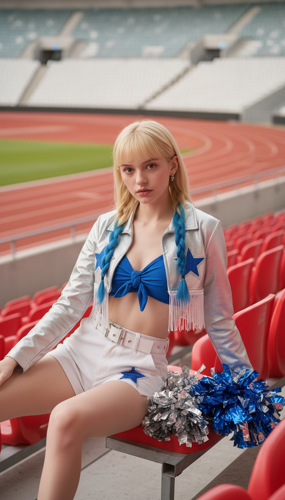
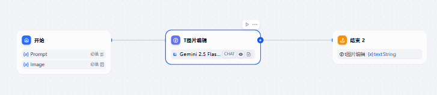
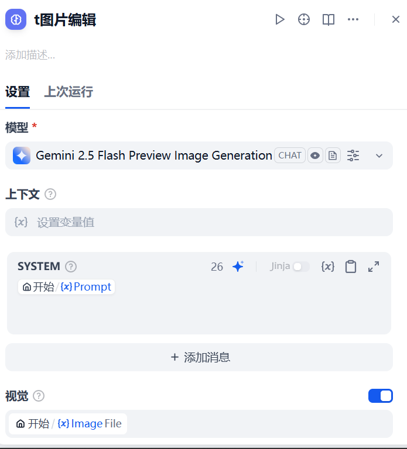
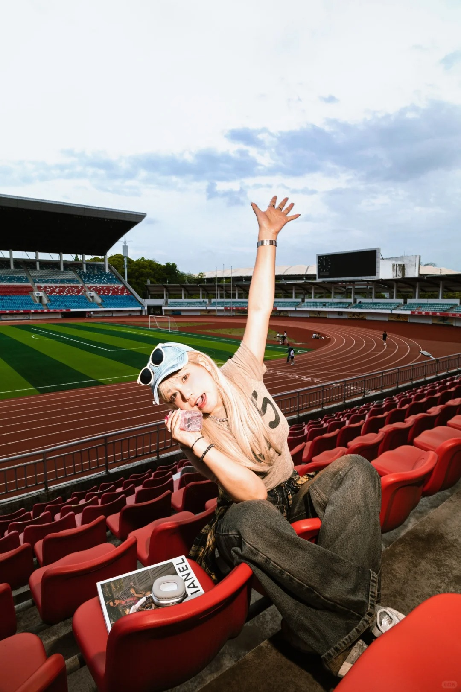
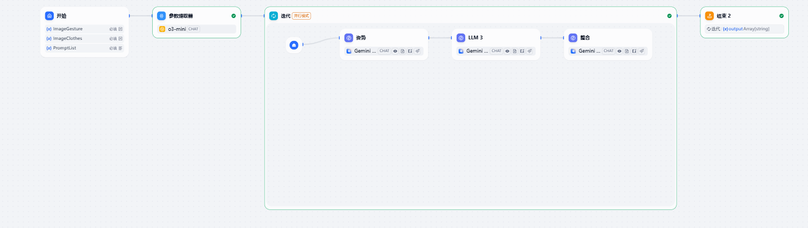

提示词平均编写时长
用时更短−81.9%
平均节省 10.4 分钟
把时间从编写描述，交还给创作与选择。
Less prompting
More creating
从一张人物原图，到一次全新的造型。
把复杂的描述过程，转化为轻量、可复用的创作流程。

蓝银色啦啦队造型优先梳理功能节点，用流程节点串联。
先跑通单线程，再考虑批量处理或分支流程。
优先梳理功能性节点：换装需要图像编辑，参考图解析需要 LLM。先明确每个节点的职责，再考虑如何连接。
上传图片、描述服装、获取结果。
将 i2i 能力封装成一条清晰路径。
Image 文件 · Prompt 文本
结合人物与服装需求，生成新图
输出处理后的图片

使用 Gemini 2.5 Flash 图片编辑模块，将文本要求与人物原图一起送入模型，保持操作路径轻量。

人物原图提供视觉基础，服装描述引导新的造型。生成结果同时呈现服装、姿势与场景的变化。
参考图自动生成提示词，
让用户选择与调整多套组合方案。
针对不会撰写提示词的用户，通过姿势参考图与服装参考图，自动生成多套组合后的提示词，供用户选择和调整。

一个约20岁的欧美少女啦啦队员，棕色皮肤，金发碧眼，面带甜美笑容，正面直视镜头。坐姿，一条腿自然垂下，另一条腿蜷曲，上半身微微倾斜，一只胳膊高高举起，另一只胳膊拿着水瓶放在嘴边。 人物占据画面约三分之二，背景是体育场看台和跑道，视角略微仰视，中景镜头。
输入姿势参考图、服装参考图与提示词变量，
经特征提取、批量描述和整合后输出数组。

参数提取器分别提取姿势与服装参考图中的元素特征。
通过迭代节点，批量生成多套组合描述。
由 LLM 将描述整合为完整提示词。
输出多套可直接使用的提示词，供用户选择与调整。
减少提示词撰写困难，提升生成结果与用户预期的匹配度。
从手动编写，到参考图辅助生成。
工作流的价值，最终体现在使用体验上。
平均节省 10.4 分钟
把时间从编写描述，交还给创作与选择。
从 42.3% 提升至 78.6%
用参考图补全细节，让生成更接近预期。
数据来自项目设计分析资料；81.9% 为按 12.7 → 2.3 分钟计算的降幅。资料未提供样本量与测试周期。
以功能节点为起点，用流程节点组织路径。先验证单一线程，再根据真实痛点扩展参考图解析与批量迭代，把一次生成变成可复用的创作流程。